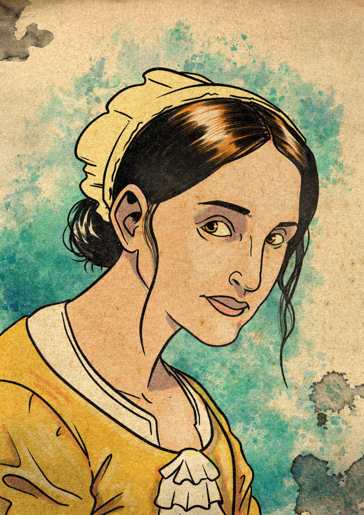

Maike Oostgracht is a polder — one of the small, numerous, diverse people who live among humans in Orden, share their gods, and frequently outlive any single human institution they keep faith with. She is Alloy-born, raised in the city's communal districts, schooled in the trades and arts of a creative upbringing, and turned at some point to clerical life in a temple of her own. That temple does not stand anymore.
Her class is Conduit. She is a vessel for divine power — not as the highest officer of any single institution but as one specially chosen, receiving abilities directly from the highest source. Her domains are an unusual pair: Love and War. The Love domain teaches her to soothe negotiations and assist others through her presence; the War domain prepares her for what happens when the soothing fails. The combination is not contradictory. It is the shape of her conviction.
Her project — currently stalled in Alloy's temple politics — is an interfaith sanctuary, a place where every faith of every world that crosses the timescape may be practised under one civic protection. The Saffron Seal's default warrant has interrupted this work. It is, to her, the central problem of the campaign.
Three +2s in the mental and social characteristics, two −1s in the physical. The Conduit reads on Intuition; Maike's abilities all roll on it. Her +2 Presence is the voice that holds a room when she speaks at a temple synod, and the +2 Reason is what lets her recall the precedent and the parable at the right moment. She is a small polder who is not built to take a blow — which is why Sanctuary Ward exists.
| Stat | Value & Source |
|---|---|
| Size | 1S (Small) — from polder Small! |
| Speed | 5 — polder base |
| Stability | 0 |
| Damage Immunity | Corruption 3 — Polder trait scales as level + 2 |
| Condition Immunity | Frightened — Polder Fearless |
| Range Bonus | +2 squares to Magic, Ranged abilities — from Prayer of Distance |
| Wealth | 1 |
| Renown / XP / Hero Tokens | 0 / 0 / 0 |
The Conduit's heroic resource is Piety: divine favour that pools when she begins the day's work and is spent on direct petition. The mechanic is unique among the cell's heroic resources in that it depends on a die roll and on whether she chooses to pray for more.
| Trigger | Gain |
|---|---|
| Start of your turn | 1d3 |
Before rolling for piety at the start of her turn, Maike may pray (no action required). Praying changes the roll's effects:
Prayer is the resource's identifying mechanic. Choosing whether to pray each turn is a small ritual the player performs at the table — accept the base roll, or risk a 1-in-3 chance of psychic damage for a chance at a domain effect and bonus piety. The choice is doctrinal. Some clerics pray every turn; some never do unless desperate; some bargain by the situation. The character builds itself in how the player handles the question.
Polders are, after humans, the most numerous and diverse ancestry in Orden. They are not humans, but they live among humans and share their gods and cultures. Almost every human culture in Orden has a polder saint, or a human saint venerated by polders. Maike was born among such a community.
Maike flattens herself into a shadow against a wall or floor she is touching, and becomes hidden from any creature she has cover or concealment from or who isn't observing her. While in shadow form, she has full awareness of her surroundings, and strikes against her and tests made to search for her take a bane. She can't move or be force moved, and can't take main actions or maneuvers except to exit this form or to direct creatures under her control.
| Trait | Function |
|---|---|
| Small! (baseline) | Size 1S. Diminutive stature lets her easily get out of — or into — trouble. |
| Reactive Tumble (1 pt) | Triggered Action (free): Whenever Maike is force moved, she shifts 1 square after the forced movement is resolved. |
| Fearless (2 pts) | Condition immunity to Frightened. Courage is all she knows. |
| Corruption Immunity (1 pt) | Innate shadow magic grants her Corruption immunity = level + 2 (3 at L1). |
Four points spent on three traits — Fearless took half her budget. The selection reads as a person who has chosen, structurally, to be the one who does not flinch. Combined with the Inciting Incident (a temple destroyed; her seniors chose retaliation), the trait reads as character history made mechanical: she will not run, and the gods do not allow her to be terrified.
The Conduit is the vessel for divine power. Maike heals her allies, buffs their action, and rains divine energy on her foes.
The target can spend a Recovery.
Spend piety (repeatable): For each piety spent, choose one enhancement:
The power roll gains an edge.
Spend 1 piety: The power roll has a double edge.
Prayer of Distance — Maike's god has blessed her with the ability to stretch her divine magic farther. The distance of her Magic, Ranged abilities is increased by 2 squares. (Her Ray of Wrath, Healing Grace, and Word of Guidance all therefore have effective range 12; the same applies to her signature and main-class abilities.)
In response to a foe's aggression, her god protects her. Whenever another creature damages Maike, that creature can't target her with a strike until she harms them or one of their allies, or until the end of their next turn.
The ward is a built-in pacifism mechanic. The moment Maike strikes back at the creature who hurt her, the ward releases that creature and they can resume attacking her. As long as she focuses on healing, buffing, or attacking other targets — and there will usually be other targets — the creature that wounded her cannot follow up. The character's class feature mechanically rewards the same disposition the sanctuary requires: the refusal to retaliate is a defensive principle.
At first level, a Conduit selects two domains and one 1st-level domain feature drawn from either. Maike has chosen Love and War, and taken the Love domain's 1st-level feature.
Maike exudes a magic aura that can soothe those willing to socially engage with her. She gains an edge on any test made to assist another creature with a test.
Additionally, when she is present at the start of a negotiation, one NPC of her choice has their patience increased by 1 (to a maximum of 5), and the first test made to influence them gains an edge.
Also grants: Handle Animals (interpersonal skill).
Both Love and War are declared at level 1; only one provides a 1st-level feature (Maike's pick is Love's Blessing of Compassion). The War domain is held in reserve — it will contribute features at later levels, and provides the thematic justification for Maike's combat-leaning ability picks (Wither, Curse of Terror) and her readiness to fight when the sanctuary work fails.
Love + War is not a contradiction on a Conduit sheet — it is a thesis statement. Care is the first move; readiness for violence is the second. The Inciting Incident sets the relationship between the two: her seniors saw the destruction of their temple and chose retaliation; Maike saw the same destruction and chose the harder middle path. She did not lay down her ability to fight. She refused to use it as the first answer. The domain selection encodes that refusal.
Two signatures, one 3-Piety, one 5-Piety. The pair of signatures is the dossier's clearest statement: one heals, one harms. Both roll on Intuition; both are Magic, Ranged abilities, benefiting from the +2 from Prayer of Distance.
She summons a spirit of size 2 who can't be harmed, and who appears in an unoccupied space within distance. The spirit lasts until the end of her next turn. She and her allies can move through the spirit's space, but enemies can't.
Any enemy who moves within 2 squares of the spirit for the first time in a combat round, or starts their turn there, takes holy damage equal to her Intuition score (+2).
The four selections compose a complete loadout. Blessed Light is the bread-and-butter — a strike that doubles as ally support every turn. Wither is the harder strike, used when an enemy needs to be debuffed before their next action. Font of Wrath creates territory — an area enemies can't enter and a damage zone they suffer for trying. Curse of Terror is the boss-stopper, with the highest damage tier and the strongest possible condition. The build's pivot is whether the moment calls for healing-via-harm or harm-via-judgment.
| Element | Choice & Note |
|---|---|
| Environment | Urban — always centered in a city. (Skill: Eavesdrop.) |
| Organization | Communal — all members considered equal. (Skill: Heal.) |
| Upbringing | Creative — raised among folk who create art or other works valuable enough to trade. (Skill: Cooking.) |
| Language | Khoursirian |
The campaign's only character whose Environment is the city where the campaign takes place. Maike is the team's local-knowledge anchor — the only one who can plausibly know an Alloy temple official by sight, or have written a letter to one of the merchant councils last year.
"You worked in a church, temple, or other religious institution as part of the clergy."
Of every supernatural perk on the cell's sheets, Thingspeaker may be the one best suited to Collateral. The campaign is structured around debt instruments and named contracts. Maike, holding the writ that names her as collateral for one uninterrupted minute, would learn its dominant emotion and receive a vision answering one of her questions about it. The perk is a key the campaign hands to her.
Caelian (default), Khoursirian (culture).
Eavesdrop, Rumors, Music, Culture, and Religion is the skill profile of someone who works in public — who is in temples and markets and at festivals, hearing what is said and what is sung. Her two Lore skills (Magic, Religion) make her one of the team's two scholars (the other being Clasiena). Where Clasiena reads the supernatural through Reason and lore, Maike reads it through Intuition and her perk's emotional resonance: same problem, different organ.
From the Draw Steel complication: "A spirit beyond your comprehension instilled in you a special purpose, choosing you to be the guardian of a place, a cause, or a philosophy. The flame that now burns in your soul can sear your enemies — or you if you fall short of expectations."
| Aspect | Effect |
|---|---|
| Fiery Ideal Benefit | While fighting on behalf of her special purpose, whenever she obtains a tier 3 outcome with a damage-dealing ability, she deals extra fire damage equal to her highest characteristic score (+2). |
| Fiery Ideal Drawback | Whenever the Director determines that she acts against her purpose or fails to live up to its standards, she takes fire damage equal to 5 + her level (6 at level 1). This damage cannot be reduced in any way. |
The Fiery Ideal is the same complication that Executor Vellpryte took on Zenith. Two characters in the cell hold themselves to a divine standard with the same mechanical penalty. Vellpryte's purpose is law-enforcement-as-judgment; Maike's purpose is the interfaith sanctuary. Should the two ever find themselves on opposite sides of a question — say, the Office of Mediation having a position on Alloy's religious politics — the mechanics of their complications will pull in opposite directions, and both will be at risk of irreducible 6 fire damage for the same encounter, for opposite reasons.
Her purpose, per the Inciting Incident, is "to protect religious freedoms, so all worshipers could practice their faith without fear." The Director will need to rule on what counts as fighting on behalf of that purpose, and what counts as acting against it. Almost any combat that defends a worshipper of any faith should qualify for the benefit. Any combat that suppresses a worship community — even one she dislikes — should risk the drawback.
From the Draw Steel inciting incident: "Your temple was destroyed in a religious conflict. The institution's leaders sought retaliation, but you saw in these actions a ceaseless cycle of destruction that would lead to more conflict. Instead, you became a hero to protect religious freedoms, so all worshipers could practice their faith without fear."
The incident text does not specify: which temple, which faith, or which conflict. Whether her former seniors are still pursuing their retaliation; whether they consider her a traitor; whether they are the temple politics blocking her sanctuary, or whether that opposition comes from elsewhere. The campaign concept's note about "a debt-namer" opposing her sanctuary suggests at least one of these is operationally relevant. Director's call.
The following is drawn from the Collateral campaign summary, which is explicitly marked as draft / provisional. Details are subject to change in Session Zero.
The premise: the player characters wake in the same holding cell in Alloy and are told "The debt has defaulted. You belong to the Saffron Seal now." Of the cell's prisoners, Maike is the only one whose home this is. The cell sits inside her city; the debt is being enforced under laws she knows; the Saffron Seal is — or is not — a name her former colleagues at the temple would have recognized. Whichever way that goes, she is the unit's local-knowledge anchor.
Combat: ranged caster, healer, and battlefield control. Sanctuary Ward keeps her safe from the first creature to wound her; Blessed Light damages a foe and heals an ally in the same action; Healing Grace converts piety into recoveries spent across multiple targets; Font of Wrath creates an area enemies can't enter. She is not built to be hit, but the build is robust against the consequences of being hit.
Out of combat: face, scholar, civic operator. Religion, Culture, Magic, Rumors, Music, Eavesdrop. Blessing of Compassion grants edge on assist tests and bumps NPC patience. Thingspeaker reads emotional resonance in objects. She is the unit's natural negotiator, civic-records researcher, and the one who can talk to a temple official without giving offence.
Per the campaign concept: Alloy's temple politics are an active opposition to her sanctuary, identified explicitly as a faction. The Saffron Seal's precise relationship to the temples is unresolved — the campaign concept identifies "a faction opposed to Maike's sanctuary" as a candidate for who named her as collateral. Whether the temples and the Seal overlap, are identical, or are working against each other for different reasons is a central campaign question — and the question Maike is positioned to investigate.
Three threads pull through Maike's sheet.
The first is the sanctuary. The Inciting Incident hands her the project as a vocation; the campaign concept identifies its blockage as a central campaign question. She has the skill set to push it forward (Religion, Culture, Rumors, Blessing of Compassion) and the mechanical permission to do so (Fiery Ideal grants her bonus damage when fighting on its behalf). The question is whether she can complete it — and whether completing means building the place, or proving the principle works without one.
The second is the refusal to retaliate. Sanctuary Ward, Fiery Ideal, the Inciting Incident, and the Love-then-War domain order all reinforce a single disposition: she does not strike first, she does not strike in revenge, and the gods grant her safety as long as she keeps to that. The campaign will test the disposition. Whether she breaks it — and whether she pays the irreducible 6 fire damage when she does — is the play.
The third is Alloy itself. Maike is the team's only insider. The campaign asks her to function as the cell's bridge to a city whose institutions have not yet served her well. She loves the place. The place has stalled her work and now imprisoned her. She is the most invested character in the city and the most concretely failed by it. Both at once.